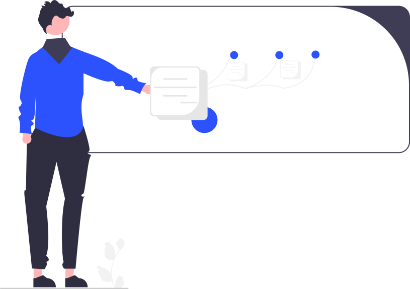

Perdalam ilmu, kuatkan iman, tingkatkan taqwa
Solusi untuk diri menuju pribadi yang lebih baik dengan Doa Hafalan,
ayat Al-Qur'an dan Hadits, serta ceramah para ulama.
Mengapa menggunakan Pray.It ?
Fleksibel
Platform ini dapat digunakan dimana saja, mulai dari device laptop
ataupun mobile yang memudahkan pengguna untuk mengakses platform.
Banyak materi, pesan, dan pengetahuan yang dapat dicontoh
Menyediakan beragam materi mulai dari doa sehari-hari, Al Qur'an
dan Hadits, kisah nabi dan juga ceramah.
Daftar dan mulai
Dengan hanya mendaftar pengguna langsung dapat mengakses beragam
materi dari platform tanpa perlu mengeluarkan biaya sepeserpun.
Mudah dan sederhana untuk digunakan
Design yang sederhana dan kompleks dengan pengelompokan fitur yang
ada membuat pengguna tidak perlu bingung untuk mencari hal apa
yang ingin dipelajari ketika mengakses platform.